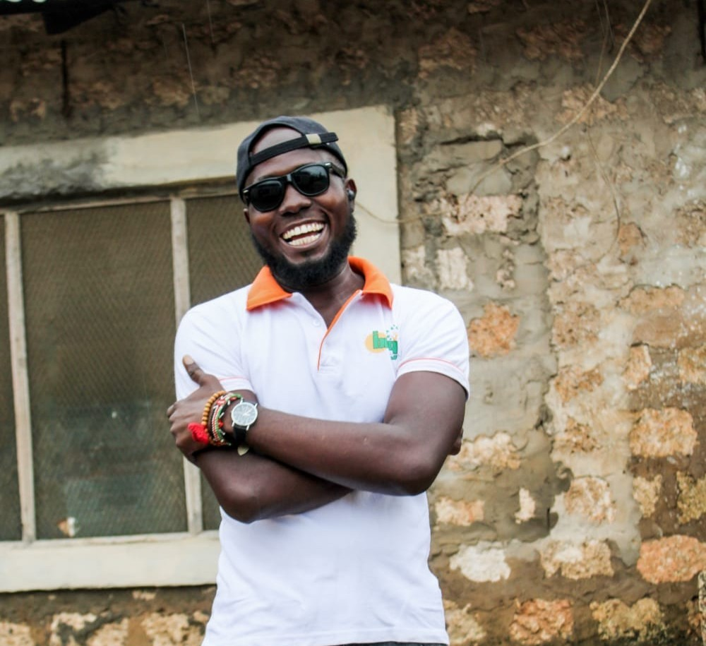
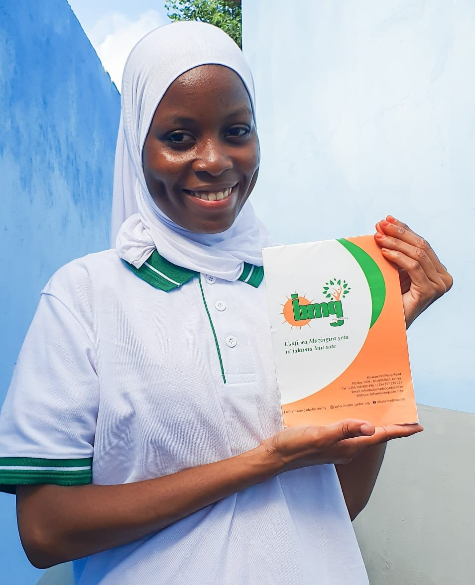
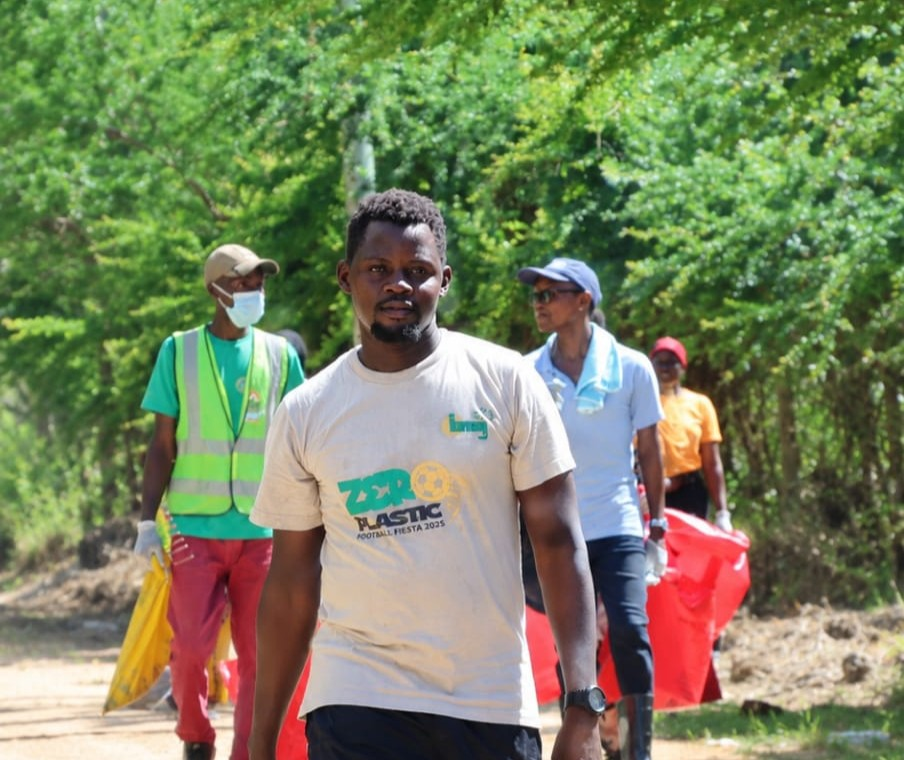

Who We Are
BAHA MADZO GADZE FOR CHARITY
Founded in 2017
Protecting Our Environment Today for a Better TomorrowOur Story
BAHA MADZO GADZE FOR CHARITY is a community-based environmental organization founded in 2017 in Mnarani, Kilifi County, Kenya.
The organization was established with the vision of serving communities through volunteerism, environmental conservation, youth empowerment, and sustainable development.
Over the years, we have grown into a grassroots movement bringing together communities, schools, government institutions, partner organizations, and volunteers to create practical environmental solutions.
Today, our work focuses on protecting ecosystems, reducing pollution, promoting environmental education, supporting climate action, and empowering communities to build a cleaner and greener future.
Our Mission
To promote environmental conservation, sustainable waste management, climate action, environmental education, and community empowerment through innovative and community-driven initiatives.
Our Vision
To build a cleaner, greener, and more sustainable future where every community actively protects and values the environment.
Our Core Values
Environmental Stewardship
Community Participation
Sustainability
Education & Awareness
Transparency Integrity & Accountability
Innovation & Collaboration
Our Leadership Team
Meet the dedicated leaders guiding BAHA MADZO GADZE FOR CHARITY towards a cleaner, greener, and more sustainable future.
Baraka Garama
Founder, CEO & Director

Steven Fanuel Otieno
Chairperson

Salma Ali
Communication Officer & Office Secretary
Gloria Kai
Treasurer

Mtawali Darius
Sports Coordinator
What We Do
Zero Plastic Campaign
Reducing plastic pollution through cleanups and community awareness.
Environmental Education
Teaching schools and communities sustainable environmental practices.
Tree and Mangrove Restoration
Restoring green spaces and strengthening climate resilience.
Sustainable Waste Management
Promoting waste segregation, recycling, and circular economy practices.
Climate Action
Supporting local initiatives that contribute to climate resilience.
Community Empowerment
Working with volunteers, youth groups, and stakeholders for lasting impact.
Our Impact
5,000+
Trees Planted
2+ Tonnes
Plastic Collected
20+
Schools Reached
50+
Community Activities
500+
Volunteers Engaged
USAFI WA MAZINGIRA YETU NI JUKUMU LETU SOTE
Keeping our environment clean is everyone's responsibility.
Join Our Mission